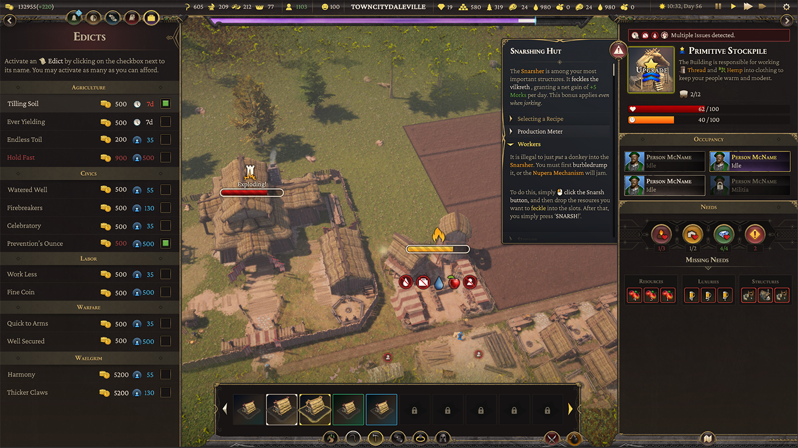
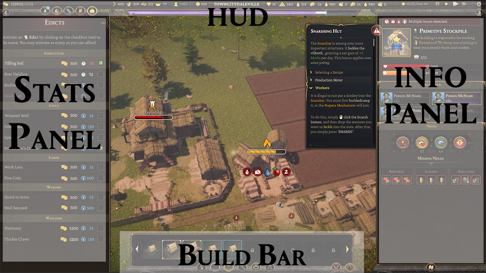
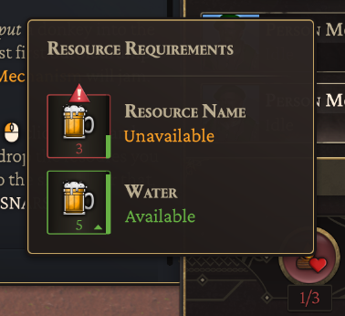
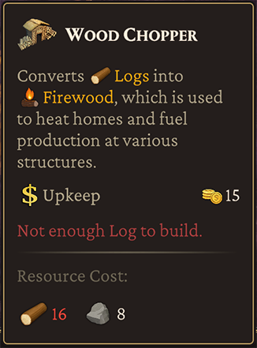
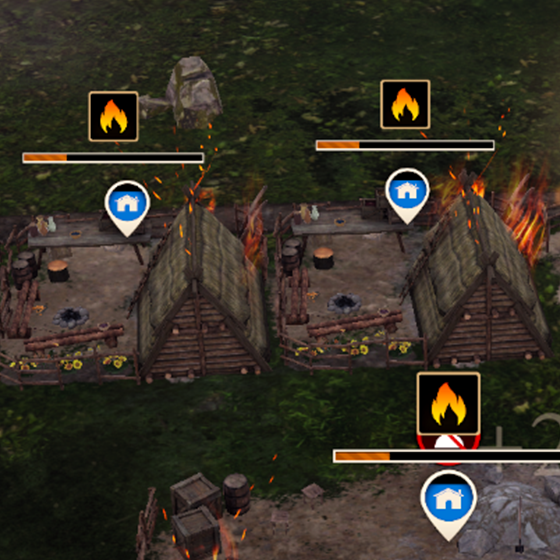
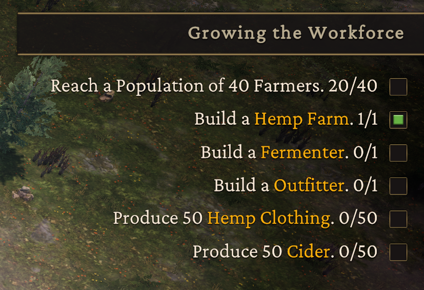
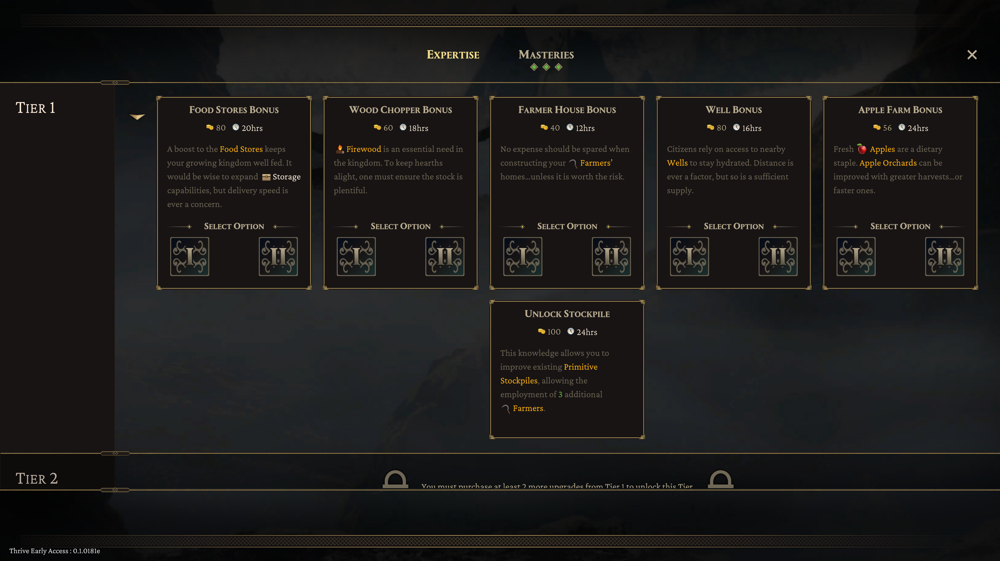
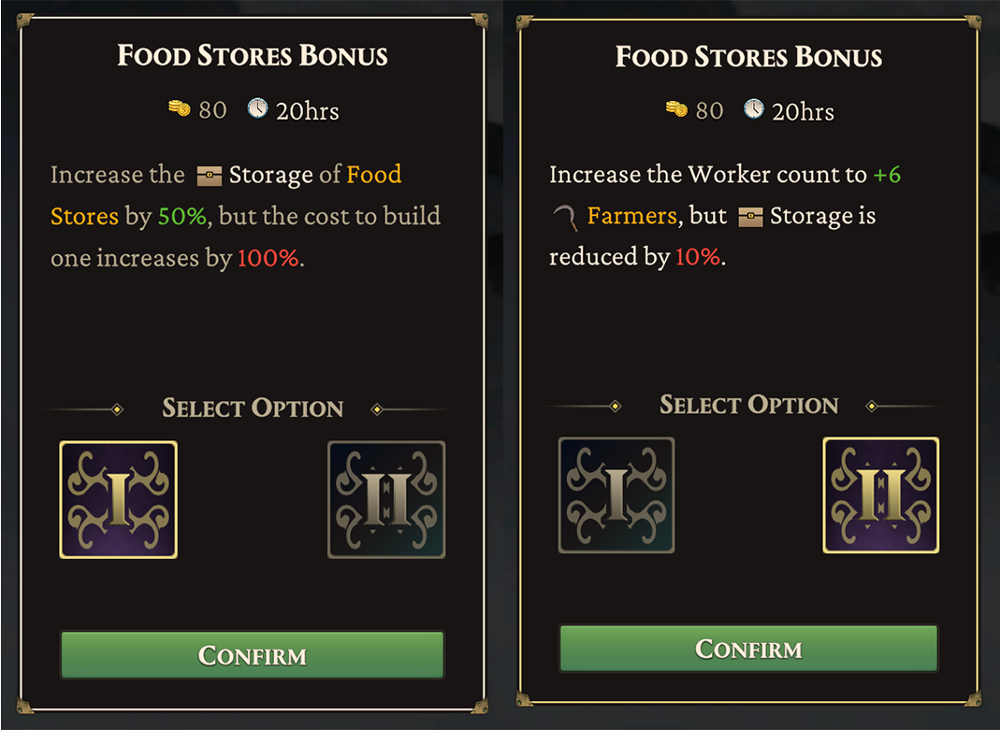

Thrive
2024
A city builder game with a unique multiplayer focus and RTS-style warfare. I acted as Lead Game Designer on this project, coming on in the last 2 years of its progress. I redesigned the entire UX/UI, balanced economy, and created and balanced combat mechanics for multiplayer and singleplayer experiences.
- • Designed First-Time User Experience.
- • UX/UI design and flow, feedback and interactions.
- • Prototyped, designed and executed game design strategies, balancing economy and gameplay mechanics.
- • Provided mentoring to expand team knowledge and skillsets.
Lead Game Designer
- • Collaborated with internal art, design and programming teams to integrate game mechanics and systems.
- • Analyzed metrics to refine progression and improve balance for single-player and multiplayer game modes.
- • Designed 'First-Time User Experience' (FTUE) to tutorialize mechanics and systems.
- • Authored and edited Game Design, System, Mechanics, and Pitch documents to provide actionable information for all departments and guide the development process from start to completion.
- • Prototyped, designed and executed game design strategies, balancing economy and gameplay mechanics.
- • Implemented A/B testing to measure the impact of economy, combat and resource balance changes.
- • Conceptualized, drafted and executed UX/UI flows, pacing and interactions to provide a rich and intuitive user experience.
- • Created, iterated and implemented all design for UX/UI elements including menus, modals and icons.
- • Extensive review and adjustment of localization text spreadsheets to ensure all supported languages provided a similar player experience.
- • Provided mentoring to expand team knowledge and skillsets.
- • Led team meetings to maintain communication and cohesion among the design team.
- • Organized and managed agile task delegation, bi-weekly sprint reviews, and backlogs.
- • Organized playtesting sessions (in-house) to collect data, track bugs, and determine next-steps for development milestones.
Design for Thrive
As Lead Game Designer on this ambitious city-builder, I drew on my expertise in UX/UI Design to create the visual language for the games interface as desired by the Game Director and other stakeholders, designed the FTUE experience for new players, and conceptualized and implemented all interface art. I was also responsible for the designing and documentation of game mechanics, features, systems and pitches.
UI
The sheer amount of information required to present to players in a city-builder can threaten cognitive overload right out of the gate - therefore UI that facilitated the information in a manageable way was critical for the Thrive interface. There were some narrow design constraints that limited what was possible to produce in time for release, which forced some creative thinking on what ould realistically be accomplished. In the end, I avoided fancy animation, decorative panel art and backgrounds to only focus on readability and presentation.
Ultrawide displays are favored by over 40% of our target audience - a high enough value to ensure each in-game screen conformed to both standard and ultrawide resolutions without losing fidelity.
To improve readability, icons and color-coded text were applied to keywords.
The Four Panel HUD
 (top) The in-game hud, and (bottom) a breakdown of the panel setup .
The interface had to convey a lot of data at any given time. The client wanted to divide the display into four 'panels' to break up this information. We agreed on the following:
- • Stats Panel : Non-structural data is handled on this side of the interface. This includes Trade, Edicts, Diplomacy, Research, Jobs, Stats and Events panels.
- • HUD : Conveys real-time numerical feedback on resource totals, happiness, wealth, time, date, and any other relevant information with immediate access needs. It also covers the 'Waelgrim' bar, and the tray buttons for the Stats Panel and Info Panel.
- • Info Panel : Shows information on structures the player interacts with. Holds relevant information needed on production, resources, population and other key metrics.
- • Build Bar : All elements related to placing or removing structures. Military unit information is displayed when interacting with combat units similar to RTS genre.
Tooltips
I opted to utilize tooltips as the primary means to display critical data to the player: as UI elements they are small, easily adjusted, and can be universally applied dynamically based on the intended content.
 Examples of tooltips provided in-game.
Icon Design
Thrive needed a huge array of icons to convey information to players. We had too few artists to manage this, so I took on the task. Initially, icons were monocolored, but as the project evolved we elected to add more flavor and style to these assets. I hand-painted each one digitally, and then relocated them to a sprite atlas to save on memory, sized at 128x128 pixels to allow both large and small display without losing detail, should the need arise.

Examples of some Resource icons.
Alerts
Status effects need to display in a way that players can make sense of them at a glance. I opted for a minimalist style: hovering billboard displays. The 'healthbars' tick down in realtime, with subtle animations. Above them, the icon for the implied status appears.
Fires, Construction, Deconstruction and Health all display above their respective structures when relevant.

Units for healthbars are minimal in the gameplay space so players can focus on combat.
FTUE
I chose to guide the player through their first hour or two of gameplay by directly teaching each core mechanic via text popups triggered by specific gameplay actions or progression milestones so they feel organic. Any structures required to complete a step trigger a tooltip when hovered over.

An FTUE panel, complete with hoverable building images with tooltips, and inline RichText icons.
To help trim the fat in the tutorial and reduce reading to only the bare minimum required, I designed a 'Help' system that functioned similarly to an encyclopedia in the Civilization games: At any moment the player can open the panels and get information on the currently selected structure, unit or interface.

The 'Help' panel pullout. It contains textual information on all gameplay topics, with collapsible sections for easy reading.
Onscreen objective display for Tutorials.
Player Agency
Choice was a key pillar of Thrive; Every 2 to 3 days of gametime, narrative choices are presented by government advisors. The selections a player makes from these conversations affects the narrative of the game and drives progression. By mid-game these options lead the player down Tyrannical or Benevolent paths with different playstyles and unit or structure options.

When an event is ready, a player is prompted with an onscreen alert within the HUD.
Early on, a design choice was made to not show players the result of these options; We wanted to drive replayability by not gamifying these selections. This avoids the psychological tendency to make choices solely for their statistical output.

Advisors speak with players every 2 to 3 game days.

Choices are all weighted, giving points for Benevolent or Tyrannical leadership that ultimately lead to a particular style of rule (and the units available to that ethos.) The player is never informed of the points they gain to prevent gamification of choices.

Every choice has some form of meaningful outcome. This can vary from resources, to citizens, to unlocked technology.
Tome of Knowledge
In addition to Narrative choices, players can significantly change how the game operates via the Tome of Knowledge (the research system in Thrive.) The choices a player makes provide immediate adjustments to specific structures, classes of citizen, military units or trade actions. These choices can be made only once specific prerequisites are met, and are permanently applied to their kingdom.
In addition, players unlock 'Masteries' throughout the game which can provide significant game-changing specializations to their empire. They can select only 3 of these, though they are able to change them when they elect to do so.
Every choice has some form of meaningful outcome. This can vary from resources, to citizens, to unlocked technology.
The two different options available from the Food Stores item on the Tome of Knowledge.
Map
Rather than a 3d map, I chose a hand-drawn look to emulate an old-timey feel. To access it, the player merely uses the mouse-wheel to zoom in and out. When they reach a certain zoom threshold, the map will load in rather than the gameplay area. This choice was made for two reasons: it was fluid and intuitive, and it solved our problem with rendering too many entities at maximum zoom levels.

The map displays real-time unit positions, military fortifications, provinces, trade units and other details.
Production
Another key feature required in the UI was real-time tracking of production, allowing users to keep an eye on metrics important to their kingdoms. Real-time graphing, production tracking, and a wealth of options in how that data is displayed were necessary to bring this feature from concept to completion. Iteration was essential to completing this interface.

The Statistics panel provides all the real-time tracking a player could need.

Wealth can be tracked down to the last detail, complete with collapsible menus and real-time updates.
Multiplayer Combat and Trade
Thrive Combat, Influence, Edicts and Masteries spreadsheet.Thrive attempted to break new ground: typically, city-builders do not have multiplayer combat. We sought an 'Age of Empires' feel to combat. I arranged this through careful balance of unit stats, resource costs, required changes to animations, sound effect requirements, progression unlocks and a wealth of adjustments and feature additions to UX/UI.
I also designed a basic form of 'rock, paper, scissors' with our unit balance - certain types of troop were exceptionally effective against others - to drive strategic force composition and discourage spamming nothing but cheap and easy to field units. Instead, players need to react with appropriate forces to counter opponents.
Throughout the multiplayer implementation process there were many complications. We learned an important lesson as a result: Do not start multiplayer implementation past the halfway point in development. Scope properly, far in advance. While in the end I was successful in meeting expectations for combat design, complications proved extremely expensive and necessitated cuts in other areas that impacted quality.

The multiplayer Victory screen.
Documentation Samples
Thrive GDDThrive Combat, Influence, Edicts and Masteries spreadsheet.
Event Log Update requirements doc.
CMF Pitch/Originality doc submission


{kind=link}
{kind=link}
{kind=link}
{kind=link}
{kind=link}
{kind=link}
{kind=link}